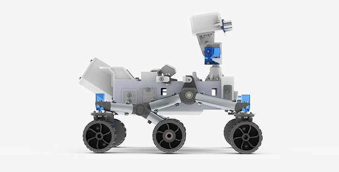

<!-- scroll-switcher.html -->

<dom-module id="scroll-switcher">
  <template>
    <style>
      :host {
        display: block;
      }

      #mainWrapper {
        @apply --layout-vertical;
        @apply --layout-center;
        @apply --layout-center-justified;

        height: 100%;
        width: 100%;
        background: #f5f5f5;
      }

      #roverImage {
        width: 300px;
      }

      #headingWrapper {
        @apply --layout-vertical;
        @apply --layout-center;

        color: rgb(19,19,19);
      }

      #mainHeading {
        font-size: 4rem;
        text-align: center;
      }

      #secondaryHeading {
        margin-top: -15px;
        font-size: 1.5rem;
        text-align: center;
      }


      .view::slotted(*) {
        height: 100vh;
        width: 100vw;

        background: red;
      }

    </style>

    <div id="mainWrapper">
      
      <div id="headingWrapper">
        <span id="mainHeading"><b>UCT</b> Mars Rover</span>
        <span id="secondaryHeading">An open Mars Curiosity Rover simulator.</span>
      </div>
    </div>
    <slot class="view" name="content"></slot>

  </template>
  <script src="scroll-switcher.js" charset="utf-8"></script>
</dom-module>
